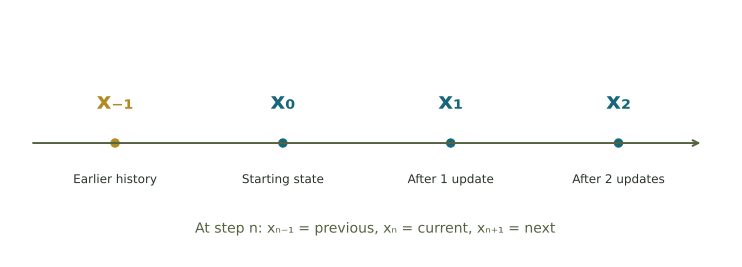
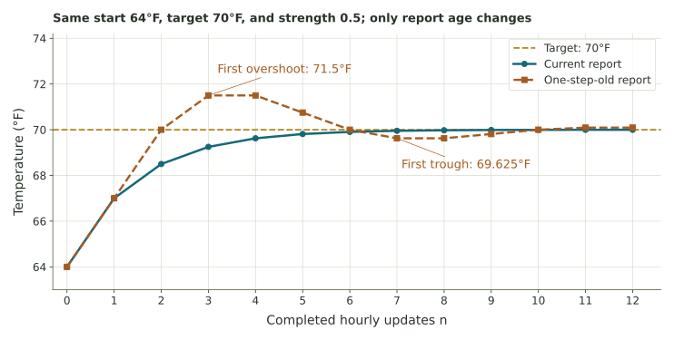
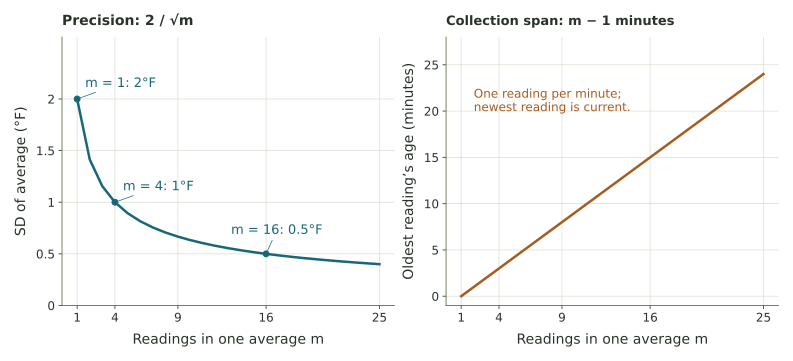

Follow every number around the loop.
Six guided investigations connect the parts of a control system, recursive updates, delayed oscillation, measurement uncertainty, and learning.
Observe, compare, act, and observe again
The arithmetic is deliberately manageable so you can explain the role of every number. Read the chapter first and keep the explorer available. Compute a few updates by hand before using its table.
Work in order. Each response receives its own numerical or choice feedback. Written explanations save for your instructor’s review; the page does not grade them by length or keywords. Your responses save in this browser. Enter your name at the bottom to print or save a completed copy; submit it through your class system as directed.

Keep a row for each decision
Write current state, available report, reported error, correction, and next state. For current reports those first two numbers agree; with delay they may differ.
Identify the condition, goal, measurement, and action
A classroom is at 64°F. Its thermostat is set to 70°F. A temperature sensor supplies a reading, and the controller can turn a heater on or off. Name the parts without confusing a display with something that changes the room.
Remove half of the remaining error
For the numerical greenhouse, use target 70°F, starting state \(x_0=64\), and strength \(k=0.5\). Each update changes the temperature by the full computed correction. The report is current and exact; ignore external disturbances.
A different pair of numbers
With start 20, target 28, and strength 0.25, the first error is 8, correction 2, and next state 22. The second error is 6, correction 1.5, and next state 23.5. Use the new remaining error each time.
Current state plus a correction based on the past
Now use \(x_{n+1}=x_n+0.5(70-x_{n-1})\), with \(x_{-1}=x_0=64\). The first two updates give \(x_1=67\) and \(x_2=70\). To find \(x_3\), start at the current \(x_2\), but use the report \(x_1\). To find \(x_4\), start at \(x_3\), but use report \(x_2\).
| Next state sought | Current state to change | Available report |
|---|---|---|
| x₃ | x₂ = 70 | x₁ = 67 |
| x₄ | Your x₃ | x₂ = 70 |
Continue the sequence and read its graph
Use your delayed values \(x_3=x_4=71.5\). To find \(x_5\), use current \(x_4\) and report \(x_3\). Continue without substituting a current temperature for an old report.

Then use the explorer with current reports and strength 1.5. It also oscillates. Explain why delay is one possible cause of overshoot, rather than its definition.
Separate unusual reports from proven changes
Assume the temperature is steady and individual sensor readings are approximately normal with mean 68°F and standard deviation 2°F. A new reading is 72°F. Use \(z=(x-\mu)/\sigma\).

Classify the response, then ask whether it adapts
Corrective feedback opposes a measured departure. Amplifying feedback reinforces a change. Adaptive behavior changes an adjustable rule or parameter using results. Adaptation can coexist with corrective feedback; it describes an additional feature.
Before printing, check the numerical feedback, read your written reasoning aloud, and confirm that every temperature and time step has a clear meaning. Written explanations require human review.